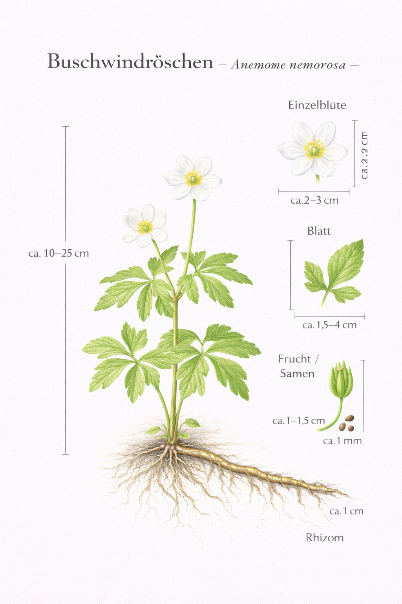
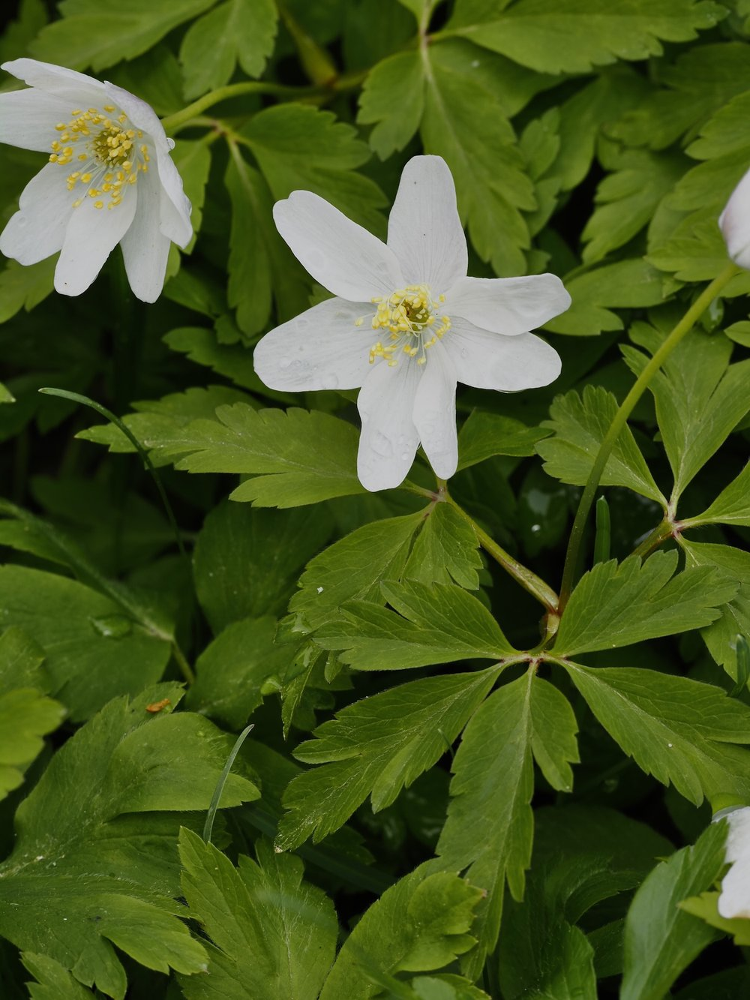

Nr. 2 · Frühblüher im Wald
Buschwindröschen
Anemone nemorosa
Ein weisser Teppich – und eine lebendige Urkunde der Waldgeschichte.




Lebendiges Waldgedächtnis
Ein Teppich Buschwindröschen kann 50 bis 100 Jahre alt sein. Das Rhizom wächst so langsam, dass ein ausgedehnter Bestand beweist: Hier stand schon immer Wald. Förster nutzen diese Pflanze als ‚lebenden Kataster' – zuverlässiger als jede Karte. Wer in einen Fichtenforst schaut und kein Buschwindröschen sieht, weiss: Hier wurde abgeholzt.
Eine Blüte ohne Nektar – und trotzdem begehrt
Das Buschwindröschen produziert ausschliesslich Pollen – keinen Nektar. Trotzdem kommen frühe Fliegen und Käfer, die auf Nektar hoffen und die Pflanze dabei bestäuben. Im UV-Licht leuchten die weissen Blüten für Insekten wie Leuchtreklamen – für uns unsichtbar, für Bienen strahlend hell.
Wissenswertes & Merksätze
Windblume & Adonis-Mythos
Im Griechischen heisst ‚anemos' der Wind – die Blüten zittern im kleinsten Luftzug. Dem Mythos nach wuchsen aus Adonis' Blut weisse Anemonen.
Der Nadelwald-Test
Wer wissen will, ob ein Wald früher Laubwald war, sucht nach Buschwindröschen. Im Fichtenforst fehlen sie – ihr Fehlen erzählt mehr als ihre Anwesenheit.
Rosa Variation
Gelegentlich findet man rosafarbene oder violette Exemplare – keine anderen Arten, sondern natürliche Farbmorphen derselben Art.